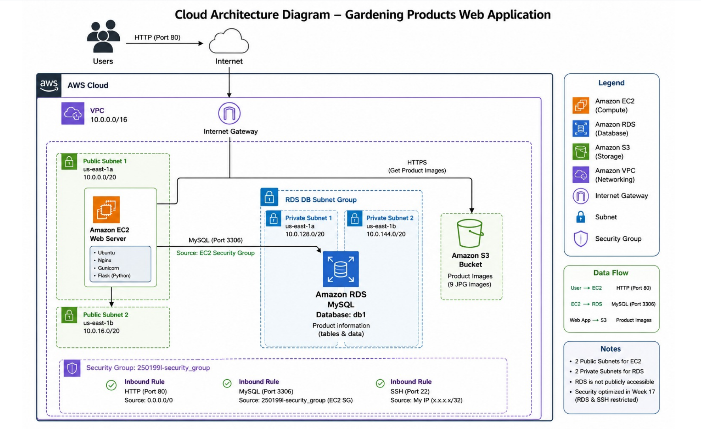

01
Cloud Architecture
The solution was designed as a multi-tier AWS architecture. Users access the application through HTTP, the EC2 instance runs the web application, RDS MySQL stores product data, and Amazon S3 stores the product images.